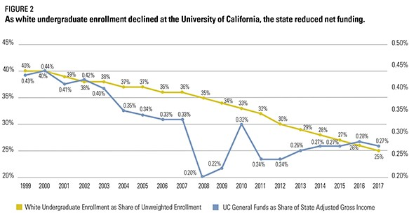
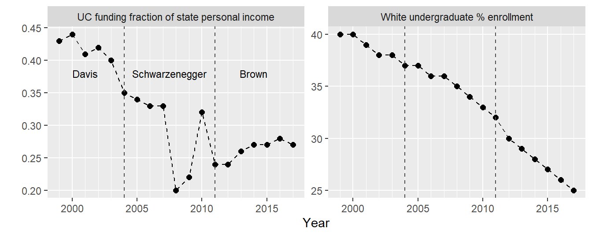
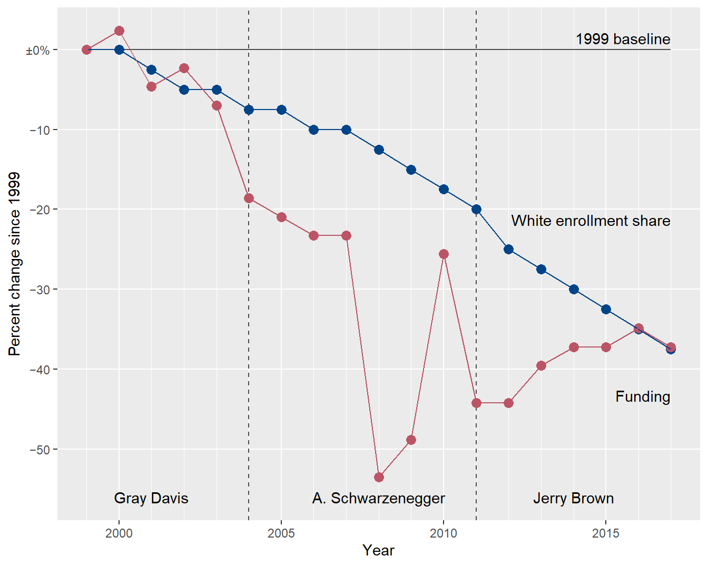
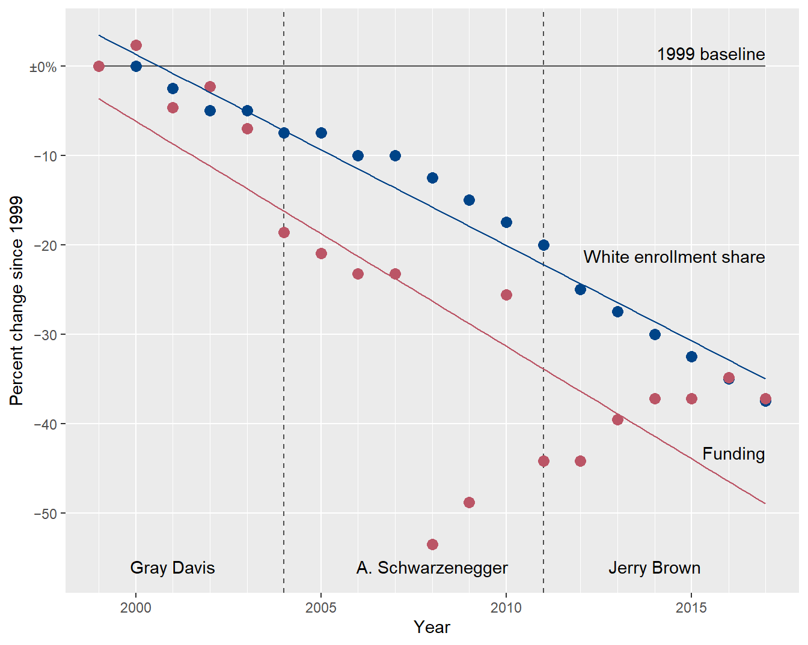
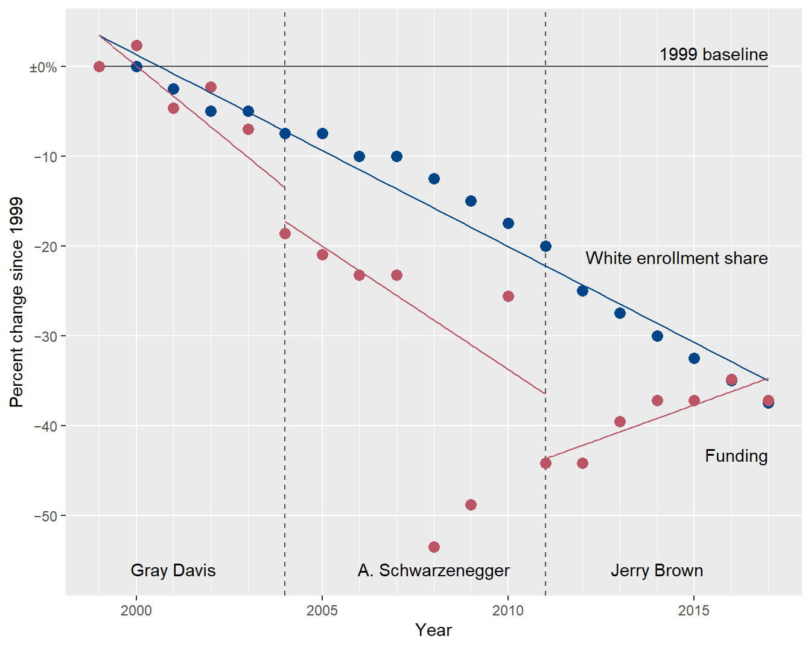
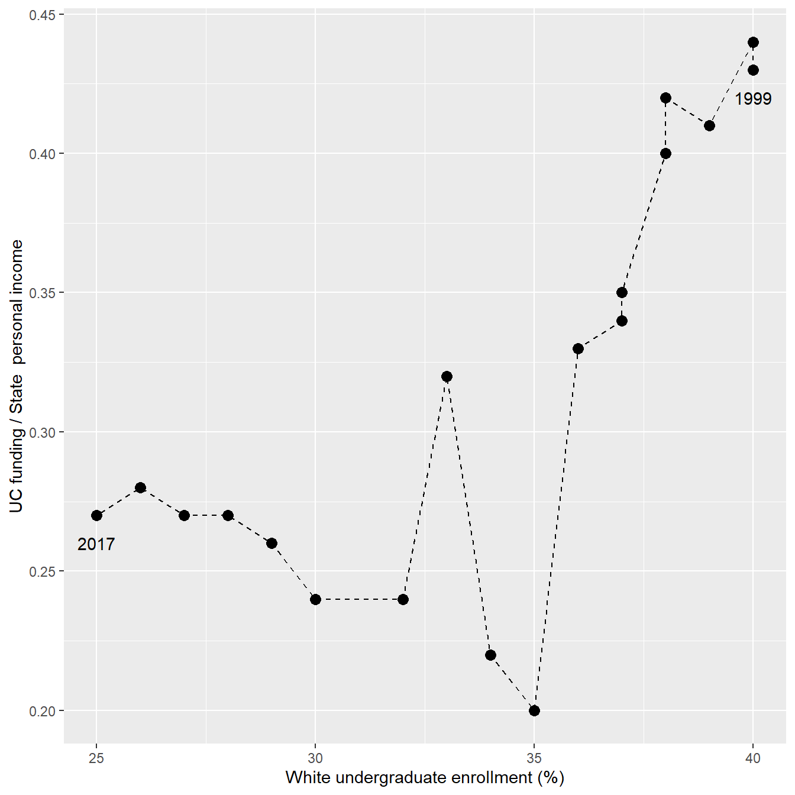
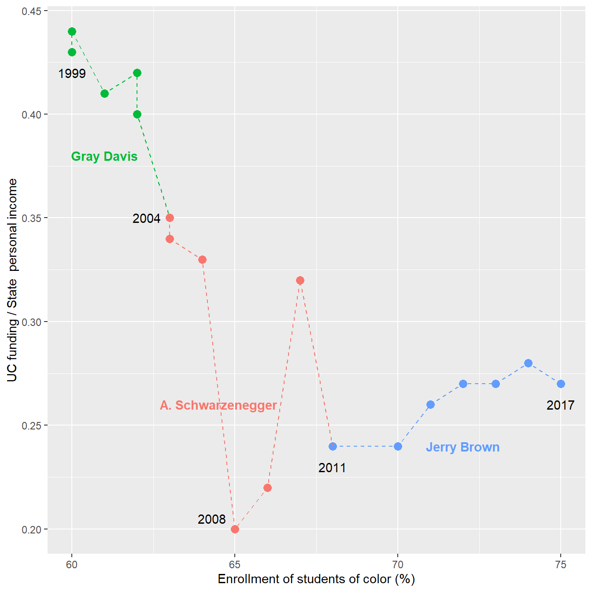
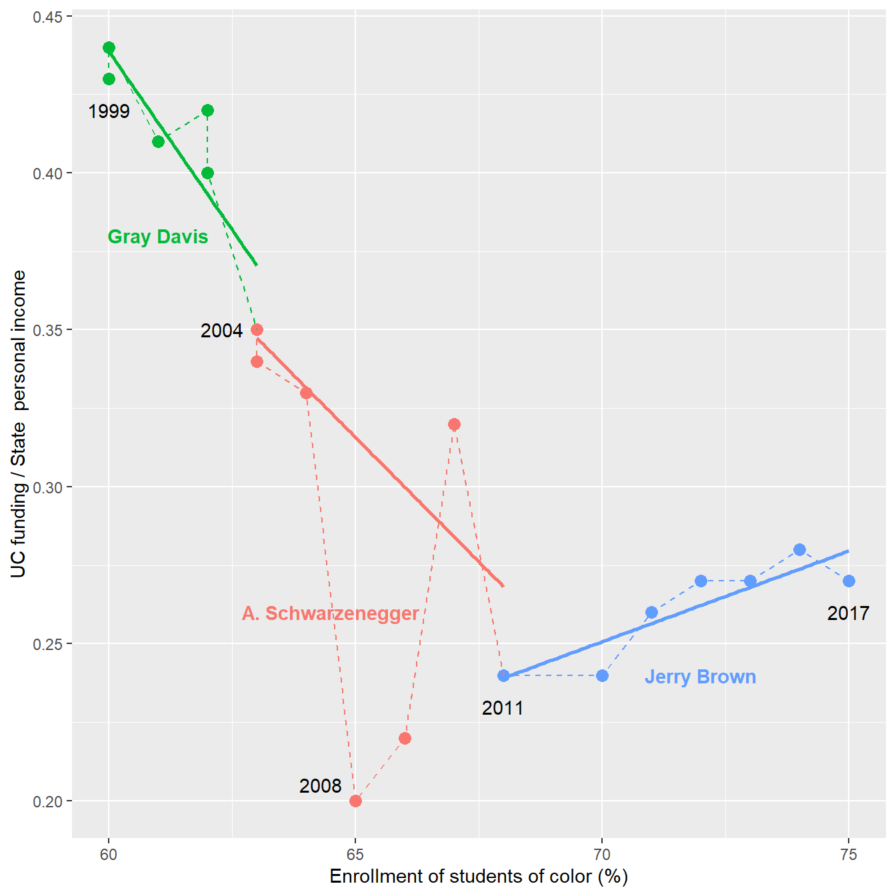

R code
# packages used
library("data.table")
library("ggplot2")
library("ggpubfigs") # color vision deficient inclusive palettes An example of replacing a dual axis chart with alternatives better suited to drawing inferences about the data.
Richard Layton
2022-06-06
The author of a recent article plots two time series in a dual axis chart as visual evidence of a correlation between the two series. I re-plot the data using three recommended alternatives: a side-by-side chart, an indexed chart, and a connected scatterplot. The alternate charts are superior to the dual axis chart for drawing inferences about the data.
Dual axis charts, often used to compare two data series, are problematic even when designed with care. As Lisa Charlotte Muth explains,
We believe that charts with two different y-axes make it hard for most people to intuitively make right statements about two data series. We recommend two alternatives strongly: using two charts instead of one and using indexed charts. (Muth, 2018)
Muth cites essays on the subject by Stephen Few (2008), Stephanie Evergreen, and Cole Nussbaumer Knaflic, plus a StackOverflow thread by Hadley Wickham on why ggplot2 does not support dual axis charts.
In this post, I critique a dual-axis chart of two time series, re-plot the data using a side-by-side chart, an indexed chart, and a connected scatterplot, and compare the messages conveyed by the new charts to those of the dual axis chart.
For reproducibility, the R code for the post is listed under the “R code” pointers.
In a recent article, Christopher Newfield (2021) addresses the structural racism of higher education funding. He uses data from the University of California (UC) system to illustrate several points.
In one instance, he uses the dual axis chart shown below to compare two time series of UC data from 1999 to 2017: declining percentage of White undergraduate enrollment and declining funding as a fraction of state personal income.

Referring to the chart, Newfield writes,
… as figure 2 illustrates, when the Democrats started their still-unbroken one-party rule of the legislature in the late 1990s, they did not break the racialized funding pattern in the state universities that [Gov. Pete] Wilson had launched. As white enrollment goes down, the state reduces net funding. The strong Democratic majority has defunded the UC system in direct proportion [emphasis mine] with its decline in white student share—except when the Arnold Schwarzenegger cuts and Jerry Brown cuts, also bipartisan, made it even worse.
To a data science practitioner, “direct proportion” implies a linear correlation between data series. In a dual axis chart, however, the appearance of correlation can be misleading because the scales of the two axes are arbitrary.
The article continues,
Whatever their intentions, Republicans and Democrats collectively gave less state support to the diverse UC than to the white UC on which both postwar parties had happily spent.
Agreed. The chart yields this message as a direct observation. In a later chart I quantify these cuts, showing that levels of funding in 2017 are only 60% of their levels in 1999.
He concludes this section with,
They [the Democratic majority legislature] yoked … major gains in BA attainment for students of color to steady funding cuts that saved money for the state’s white voting majority.
As the Biden-Harris administration settles in, it’s worth remembering that the biggest blue state’s higher education policy has been a textbook case of the systemic racism that became a national byword in 2020.
Given the data at hand, I show that charts better suited to the visual task can reveal nuances in the story obscured by the dual axis design.
The data structure is outlined in Table 1: two quantitative variables evolving over time (yearly). The funding measurement is a ratio of (presumably) nominal dollars in each year, so adjusting for inflation is unnecessary.
| variable | structure |
|---|---|
| year | categorical, ordinal |
| percent White enrollment | quantitative |
| UC funds fraction of state income | quantitative |
I transcribed the data values from the original chart. These data are available in the blog data directory as a CSV file. Here I add the governors’ names for annotating the charts.
year white_pct fund_frac gov
<num> <num> <num> <char>
1: 1999 40 0.43 Gray Davis
2: 2000 40 0.44 Gray Davis
3: 2001 39 0.41 Gray Davis
4: 2002 38 0.42 Gray Davis
5: 2003 38 0.40 Gray Davis
6: 2004 37 0.35 A. Schwarzenegger
7: 2005 37 0.34 A. Schwarzenegger
8: 2006 36 0.33 A. Schwarzenegger
9: 2007 36 0.33 A. Schwarzenegger
10: 2008 35 0.20 A. Schwarzenegger
11: 2009 34 0.22 A. Schwarzenegger
12: 2010 33 0.32 A. Schwarzenegger
13: 2011 32 0.24 Jerry Brown
14: 2012 30 0.24 Jerry Brown
15: 2013 29 0.26 Jerry Brown
16: 2014 28 0.27 Jerry Brown
17: 2015 27 0.27 Jerry Brown
18: 2016 26 0.28 Jerry Brown
19: 2017 25 0.27 Jerry BrownMuth and others recommend plotting two data series in separate charts. Stephen Few, for example, says
The first and most obvious [approach] is to place them in separate graphs, positioned close to one another so that the patterns in each can be compared to one another, but magnitude comparisons will be discouraged. (Few, 2008)
Following this prescription, I plot the two data series in Figure 1 using separate panels having their own vertical, quantitative scales but sharing a common time scale. I select an aspect ratio that emphasizes the slopes of the line segments.
Newfield mentions the terms of two California governors, so I annotate the chart to indicate the gubernatorial terms that span these data: Gray Davis (Democrat), Arnold Schwarzenegger (Republican), and Jerry Brown (Democrat).
# transform to block record form
dt_melt <- melt(dt,
measure.vars = c("white_pct", "fund_frac"),
variable.name = "data_series",
value.name = "value")
# stand-alone data frame for annotating gubernatorial terms
gov_text <- data.frame(
label = c("Davis", "Schwarzenegger", "Brown"),
data_series = "fund_frac",
x = c(2001, 2007.5, 2014),
y = 0.38
)
# vector for relabeling the facets
facet_labels <- c("UC funding fraction of state personal income",
"White undergraduate % enrollment")
names(facet_labels) <- c("fund_frac", "white_pct")
# chart
ggplot(data = dt_melt, mapping = aes(x = year, y = value)) +
facet_wrap(vars(data_series),
ncol = 2,
scales = "free_y",
labeller = labeller(data_series = facet_labels)) +
geom_line(size = 0.5, linetype = 2) +
geom_point(size = 2) +
scale_x_continuous(minor_breaks = seq(1999, 2017, 1)) +
labs(x = "Year", y = "") +
theme(panel.grid.minor.y = element_blank()) +
# delineate gubernatorial terms
geom_vline(xintercept = c(2004, 2011),
color = "gray30",
size = 0.5,
linetype = 2) +
geom_text(data = gov_text,
mapping = aes(x = x, y = y, label = label),
size = 3)
The decrease in the White undergraduate population fraction is fairly steady over this time span. This is not surprising given the changing demographics of the state: in 2000, Non-Hispanic whites were 46% of the state population; in 2010, 40%; and in 2020, 35% (Allen & Turner, 2011; McGhee et al., 2021).
UC funding decreases as well, but with greater irregularity, especially during the Schwarzenegger years. Even ignoring the cuts associated with the 2008 global financial debacle, Schwarzenegger’s tenure concludes with the largest cuts in the data set.
Yet contrary to Newfield’s assertion that Jerry Brown’s cuts “made it even worse,” the funding trend changes course under Brown. It doesn’t get much better, but it doesn’t get worse either.
The second choice of many experts is the indexed chart. Again, from Stephen Few,
The other less obvious solution, which works only for time series, is to convert all sets of values to a common quantitative scale by displaying percentage differences between each value and a reference (or index) value. For instance, select a particular point in time, such as the first interval that appears in the graph, and express each subsequent value as the percentage difference between it and the initial value. (Few, 2008)
Selecting 1999 as the index year, in Figure 2 I graph enrollment change with respect to its index (40%) and funding change with respect to its index (0.43). Thus both series share a common quantitative scale as well as a common time scale.
In reading the chart, for example, a change of −10% indicates the variable has dropped by 10% relative to its 1999 index value.
# transform to block record form
dt_idx <- melt(dt,
measure.vars = c("white_pct", "fund_frac"),
variable.name = "data_series",
value.name = "measure")
# compute percent change relative to 1999
setkeyv(dt_idx, c("data_series", "year"))
dt_idx[, idx := measure[1], by = c("data_series")]
dt_idx[, rel_change := 100 * ((measure / idx) - 1)]
# create the base chart for all versions of indexed charts
p <- ggplot(data = dt_idx,
mapping = aes(x = year, y = rel_change, color = data_series)) +
# 1999 baseline
geom_segment(aes(x = 1999, xend = 2017,
y = 0, yend = 0),
color = "gray30",
size = 0.5) +
annotate("text",
x = 2017,
y = 0,
label = "1999 baseline",
hjust = 1,
vjust = -0.5) +
# delineate gubernatorial terms
geom_vline(xintercept = c(2004, 2011),
color = "gray30",
size = 0.5,
linetype = 2) +
geom_text(data = dt_idx[data_series == "fund_frac" & year %in% c(2001, 2008, 2014)],
mapping = aes(y = -56, label = gov),
color = "black") +
# label the two data series
annotate("text",
x = 2017,
y = c(-22, -44),
label = c("White enrollment share", "Funding"),
hjust = c(1, 1),
vjust = c(0, 0)) +
# points, scales, labels, theme
geom_point(size = 3) +
labs(x = "Year", y = "Percent change since 1999") +
scale_color_manual(values = friendly_pal("contrast_three")) +
scale_x_continuous(breaks = seq(2000, 2020, 5),
minor_breaks = seq(1999, 2020, 1)) +
scale_y_continuous(breaks = seq(-50, 0, 10),
labels = c(paste0("\U2212", seq(50, 10, -10)), paste0("\U00B1", "0%"))) +
theme(panel.grid.minor.y = element_blank(),
legend.position = "none")
# connect the dots for the first indexed chart
p + geom_line(linetype = 1, size = 0.5)
In an indexed chart, lines that are locally parallel indicate a potential correlation between data series.
To check for parallels, I replace the connect-the-dots lines with regression curves. At first glance, the lines are approximately parallel, suggesting a correlation. The problem is lack of fit: a linear fit is a good model for the enrollment data but a poor model for the funding data.

The shape of the funding data is clearly different from one governor to the next. In the next chart, I create separate funding regressions by governor, ignoring the 2008-09 data as outliers, and I leave the enrollment linear fit as is. The aspect ratio is arbitrary: in this chart, relative parallelism is the indicator, not the slope itself.
# leave enrollment fit as is
p + geom_smooth(data = dt_idx[data_series == "white_pct"],
method = "lm",
se = FALSE,
size = 0.5) +
# add regression lines by governor
geom_smooth(data = dt_idx[data_series == "fund_frac" & year <= 2004],
method = "lm",
se = FALSE,
size = 0.5) +
geom_smooth(data = dt_idx[data_series == "fund_frac" & year %in% c(2004:2007, 2010:2011)],
method = "lm",
se = FALSE,
size = 0.5) +
geom_smooth(data = dt_idx[data_series == "fund_frac" & year >= 2011],
method = "lm",
se = FALSE,
size = 0.5)
Again looking for parallel lines, I think this chart brings the shapes of the funding trends by governor more clearly to the forefront.
Scatterplots are designed to reveal correlations between two quantitative variables.
However, our two quantitative variables are both time series, adding a third variable to the story. To account for the time sequence, the data markers in a scatterplot are sequentially connected—yielding the “connected scatterplot” design. As Muth says,
Suddenly, time doesn’t move from left to right, but wiggles through space.
The connected scatterplot for the UC enrollment/funding data is given in Figure 5: enrollment data along the x-axis, funding data along the y-axis; each data marker represents the enrollment-funding relationship in a given year; data markers are connected in sequence by year; and starting and ending years are labeled to orient the reader. The 1:1 aspect ratio makes relative diagonals easier to identify (more on this shortly).

The non-intuitive aspect of this chart is that time reads from right to left, which is likely to confuse some readers.
I reverse the direction of the time path in Figure 6 by transforming the enrollment variable to percent enrollment of students of color (which increases over time.) I also encode the gubernatorial terms using color and add several year labels to assist the reader. (The data marker for 2006 overprints the identical value for 2005.) The color palette is selected to accommodate viewers with a color vision deficiency.
# add end-of-term dummy rows grouping by governor
dum_row <- copy(dt)
dum_row <- dum_row[year == 2004 | year == 2011]
dum_row[year == 2004, gov := "Gray Davis"]
dum_row[year == 2011, gov := "A. Schwarzenegger"]
dt_conn <- rbindlist(list(dt, dum_row))
# add a column to ensure correct order
dt_conn[, order_gov := fcase(
gov %chin% "Gray Davis", 1,
gov %chin% "A. Schwarzenegger", 2,
gov %chin% "Jerry Brown", 3
)]
setkeyv(dt_conn, c("year", "order_gov"))
# base plot for connected scatterplot. color = gov uses the dummy rows
p <- ggplot(dt_conn, aes(x = 100 - white_pct, y = fund_frac, color = gov)) +
geom_point(size = 3) +
labs(x = "Enrollment of students of color (%)",
y = "UC funding / State personal income") +
theme(legend.position = "none") +
# label selected years with original dt
geom_text(data = dt[year %in% c(1999, 2004, 2008, 2011, 2017)],
aes(label = year),
color = "black",
nudge_x = 0.7 * c( 0, -1, -1, 0, 0),
nudge_y = 0.01 * c(-1, 0, 0.5, -1, -1)) +
# label governors once per span
geom_text(data = dt_conn[year %in% c(2001, 2008, 2014)],
mapping = aes(label = gov),
nudge_x = 0.5 * c(0, -1, 0),
nudge_y = 0.03 * c(-1, 2, -1),
fontface = "bold")
# first connected scatterplot chart, connect the dots
q <- p + geom_path(linetype = 2)
q
In a connected scatterplot, lines on a relative diagonal indicate a potential correlation between variables.
… positive correlations show up as relatively diagonal lines along the “forward slash” axis of the connected scatterplot, while negative correlations show up on the “backslash” axis. (Haroz et al., 2016)
To help tease out the underlying visual pattern, I add regression lines within the gubernatorial segments as before (ignoring the funding data in 2008–09 as outliers), yielding Figure 7. The 1:1 aspect ratio makes relative diagonals easier to identify.

The chart yields a story consistent with my earlier findings,
Each of the three alternate chart designs is more effective than the dual axis chart at revealing and conveying the stories in these data.
Of the three alternatives, I suspect that the side-by-side chart would work best for most audiences. The trends can be seen without having to explain the normalization of the indexed chart or the path-through-time of the connected scatterplot.
However, the indexed chart and the connected scatterplot are better than the side-by-side chart at revealing correlations: parallel lines in the indexed chart; diagonal lines in the connected scatterplot.
Taken all together, I think the revised charts support these statements:
And these inferences:
Yet, as Newfield reminds us—before, during, and after the time span of these data, the legislature has been under one-party, Democratic rule; a legislature that has repeatedly cut the UC budget such that in 2017 funding as a percent of state personal income is only 60% of what it was in 1999—a persistent devaluation of higher education as a public good.